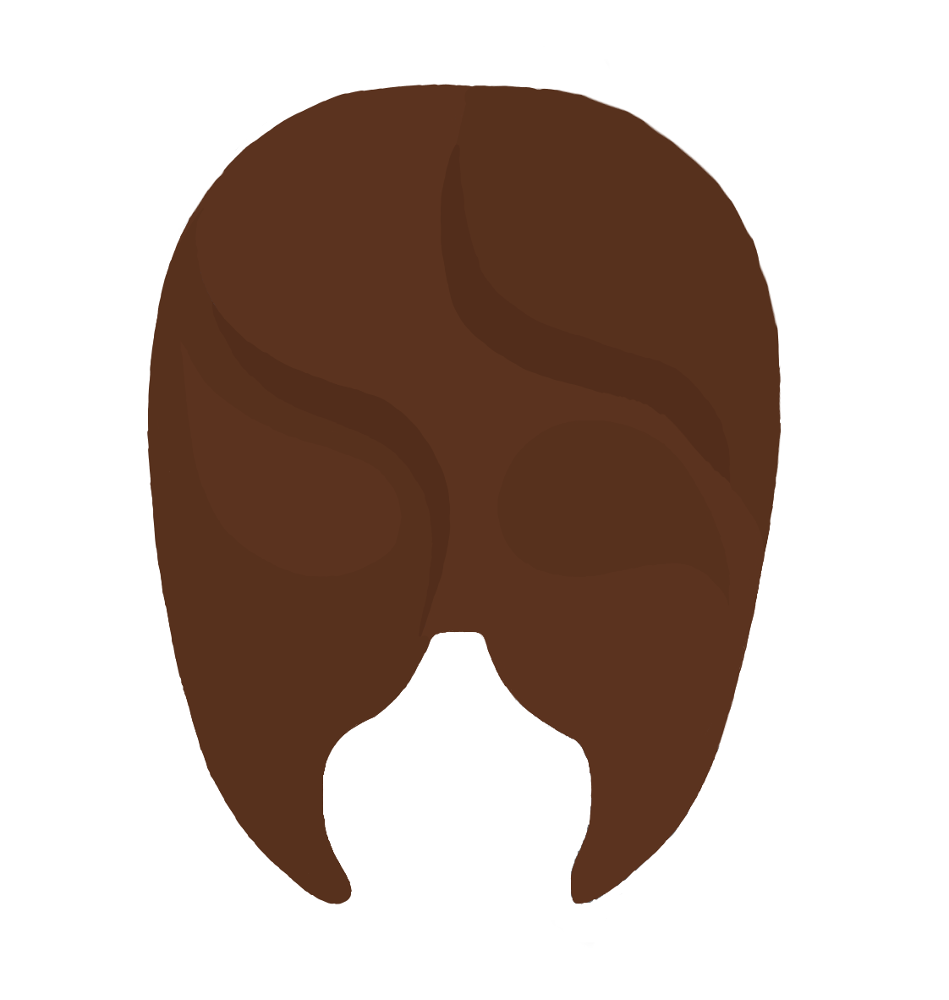

Agradecemos a las personas que nos han brindado sus historias para poder crear este lugar de expresión.
Programación Web: Sarahi Rosales.
Diseño web: Acalli Nazario.
Ilustraciones: Hann "sh4d" Ortega.
Redacción y edición de audios: Angy Sánchez.
2025. Colectivo Punto Rojo.
